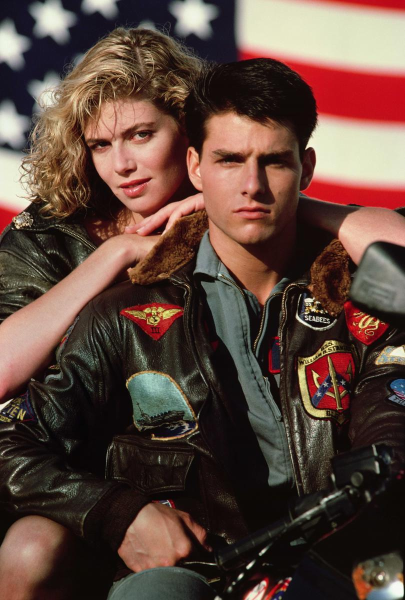

Top Gun (Ídolos del aire)
Tom Cruise está soberbio en el papel de Maverick Mitchell, un joven piloto decidido a ser el mejor. Y
Kelly McGillis interpreta a la instructora que enseña a Maverick varias cosas que no pueden aprenderse en
un aula.